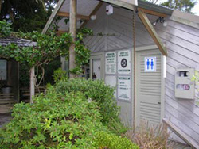
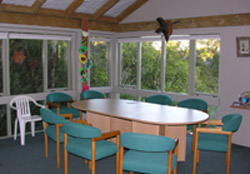
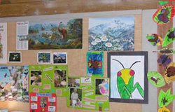

Classroom Visits to Fernglen

Education Centre at Fernglen
- Rare and endangered plants from throughout New Zealand, including an Alpine collection.
- An enclosed Fernery.
- A bush walk across a serene nikau and tree fern gully with established natives.
Education Sessions
These can be adapted to your needs and level. All sessions can be related to the NZ Science and Social Studies Curriculum with opportunity for practical field work and or environmental emphasis.

Inside the Education Centre
- Local History - a journey through time on the Fisher's property, owned by the Fisher family since 1888 and now an Auckland Council Reserve.
- Native plant identification - observation, seed collecting and planting.
- Birds and their food sources - all you want to know about the tui, kereru, kotare, riroriro, fantail, morepork, shining cuckoo, silver eye.
- Minibeasts - discover and observe habitats, behaviour and life cycles, invertebrate sampling, beneficial and harmful effects on plants.
- Endangered Plants
- The Wetland Habitat

Examples of Student Work
Information
- Entrance to Fernglen is free
- Whole class visits and group bookings
- Education centre available catering for about 30 people - whiteboard, activities
- Sleepovers for 10 children and accompanying adults - night walks, glow worms
- Self-guided tours - Fernglen is open to the public so you can guide yourselves with the help of the maps and tree identification sheets available at the gate or arrange for staff to set up THE NATURE TRAIL - this involves stations around the gardens and on the bush walk with a variety of activities suited to your needs.
Classroom visit form
To arrange a classroom or group visit please download and complete the form below and fax to the number located on the bottom of the form:
PDF format (9KB), Word document (39KB)
Classroom Resource Book
Fernglen Resource Book
A Primary School Science Resource for Fernglen Gardens
Written by Bridget Glasgow 1997:
PDF format (1.5MB), Word document (5.5MB)